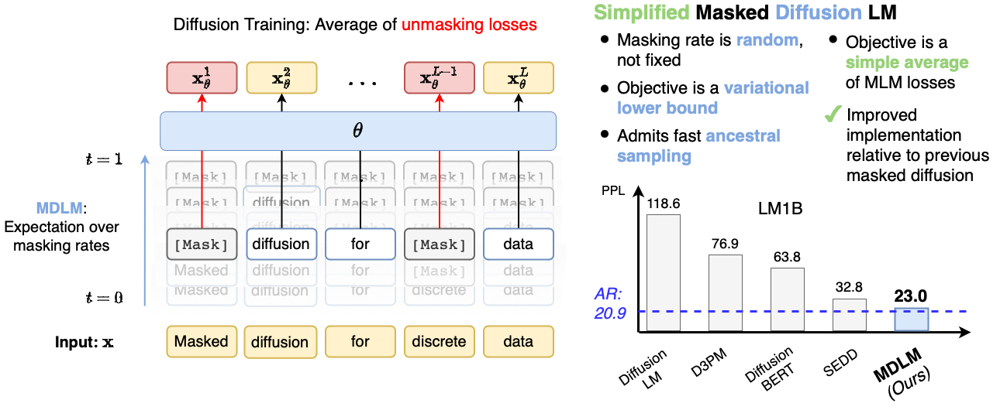
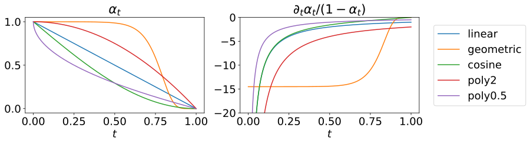
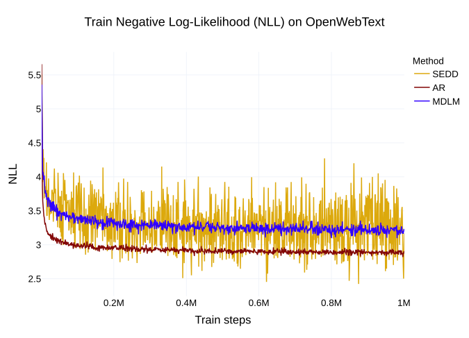
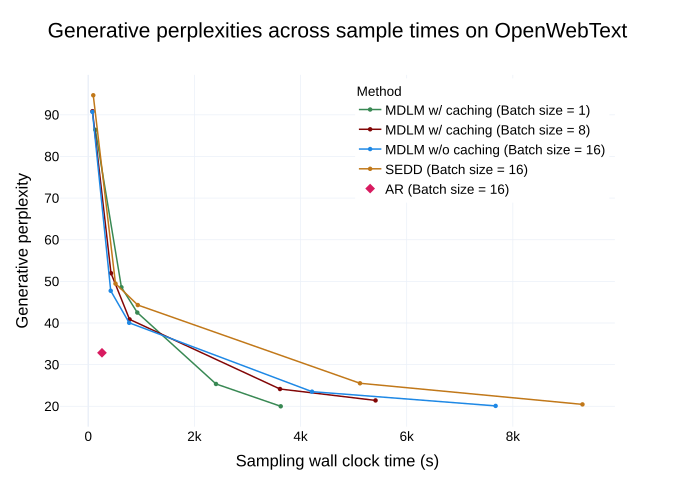
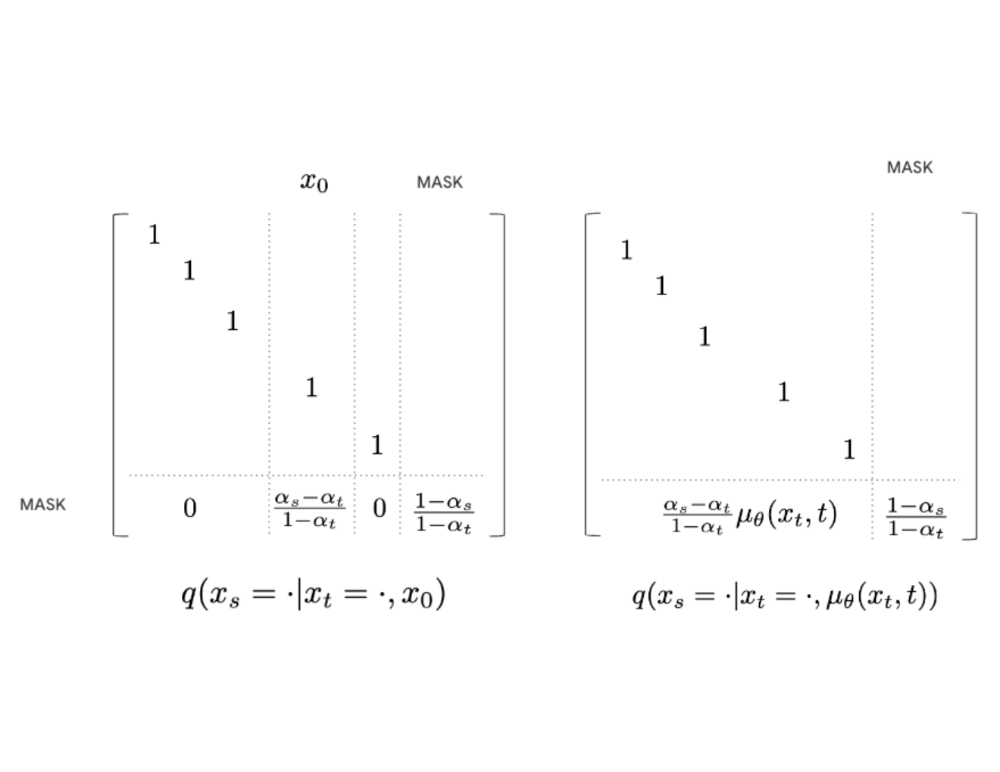
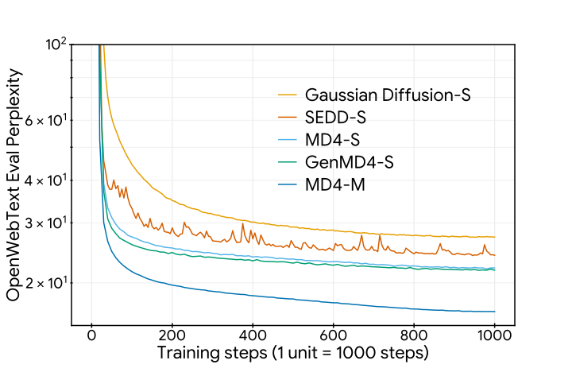
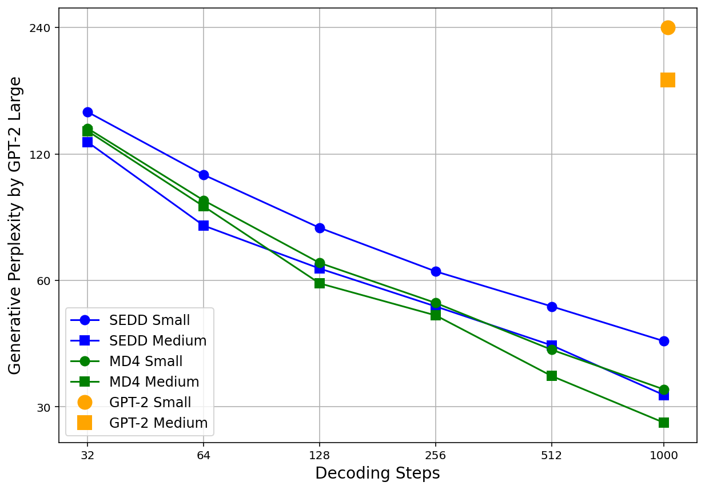

简单而有效的掩码扩散语言模型
Simple and Effective Masked Diffusion Language Models
同期工作 MD4（Simplified and Generalized Masked Diffusion for Discrete Data）：Jiaxin Shi*, Kehang Han*, Zhe Wang, Arnaud Doucet, Michalis K. Titsias，Google DeepMind；*共同一作。
GitHub star 为 2026-10-19 的快照。阅读状态、进度与收藏只保存在你的浏览器里。
逐节精读
这部分按论文的章节顺序，用本站自己的话把整篇论文从头讲一遍。读懂某个概念需要的背景知识，会在第一次用到它之前单独讲清楚（青色框）。每个结论都尽量说出“因为什么、所以什么”。论文以 CC BY 4.0 许可发布，所以原图直接放在讲到它的地方并说明怎么看；原图没有画到的概念，用本站的示意图补上。标“推算”的数字是本站根据论文数据算出来的，不是论文原话。第 3.5 小节是本站加的一个 4 个 token 的完整算例，第 7 节专门对照同期工作 MD4。每节末尾有英文原文的链接。
0 导读：这篇论文解决什么问题
今天的大语言模型几乎都是自回归（autoregressive，AR）的：从左到右，一次预测一个 token。图像生成领域的主力则是扩散模型：先把数据一步步加噪成纯噪声，再训练一个网络一步步把噪声还原成数据。扩散模型不必按固定顺序生成，理论上可以一次改动很多位置、可以在中间填空、也可以反复修改，所以很早就有人想把它用到文字上。但到 2024 年上半年为止，扩散语言模型在最基本的指标——困惑度（衡量模型给真实文本分配了多大概率）——上一直明显落后于同等规模的自回归模型。
这篇论文的主张是：这个差距有相当一部分不是扩散本身的问题，而是此前的实现太复杂、训练配方太旧。作者只研究一种最简单的离散扩散——掩码扩散：加噪就是把 token 随机替换成一个特殊的 [MASK] 符号，去噪就是把 [MASK] 猜回原来的词。他们做了三件事：
- 给反向过程设计了一种叫 SUBS 的参数化，把两条“本来就成立”的事实（干净文本里不会有 [MASK]；没被遮住的词不用改）直接写进网络的输出；
- 在这种参数化下，把扩散模型的训练目标（负 ELBO）化简成一个非常简单的形式：只在被遮住的位置算交叉熵，再乘一个只和遮挡比例有关的权重。这正是 BERT 的掩码语言模型损失的加权平均；
- 配上现代的训练配方（更好的分词器、DiT 网络、数值稳定的实现、方差更低的时间采样），并给出更快的采样器和能生成任意长度文本的“半自回归”生成方法。
结果是：在 LM1B 和 OpenWebText 两个标准语言建模数据集上，MDLM 的困惑度上界比此前最好的扩散模型 SEDD 更低，并且离同等训练量的自回归模型更近。几乎同一周，Google DeepMind 的 MD4 从另一条推导路线得到了同一个训练目标。约八个月后（2025 年 2 月），LLaDA 用这个目标从零训练了一个 80 亿参数的模型，它由此成为扩散大模型的标准训练目标。

读完这部分，你应该能回答这几个问题：
- 掩码扩散的“加噪”和“去噪”具体在做什么？为什么叫“吸收态”？
- 扩散模型的训练目标为什么是一个“下界”？它怎么一步步化简成“加权的 BERT 损失”？权重 \(1/t\) 从哪来？
- SUBS 的两条替换各起什么作用，为什么论文管这叫 Rao-Blackwell 化？
- 为什么噪声调度的形状不影响这个下界的值，却影响训练的方差？
- 训练好的模型怎么生成文字？为什么去掉时间输入能让采样变快？怎样生成比训练长度更长的文本？
- 报告的困惑度和自回归模型比，是在什么条件下比的？比 SEDD 好的部分，有多少来自新目标、多少来自训练配方？
- MD4 的推导和 MDLM 有什么异同？两篇的结果能不能直接比？
1 引言：扩散语言模型到底落后多少
评价一个语言模型最直接的方法，是看它给一段真实文本分配了多大的概率：概率越大，说明模型越“懂”这种文本。自回归模型把一段文本的概率拆成一串条件概率的乘积，\(p(x_1,\dots,x_N)=\prod_i p(x_i\mid x_{\lt i})\)，每一项都能直接算出来，所以它能给出精确的对数似然。
为了让不同长度的文本可以比较，通常把总的负对数似然除以 token 数，得到“每个 token 平均的负对数似然”（单位是 nat），再取指数，就是困惑度（perplexity，PPL）：
困惑度可以理解成“模型平均在多少个候选词之间犹豫”：困惑度 20 大致相当于每一步都在 20 个等可能的词里挑。困惑度越低越好。扩散模型通常算不出精确的似然，只能算出一个下界（下一节解释），换成困惑度就是一个上界，论文的表格里用“≤”标出。
论文开头先摆出问题：此前的离散扩散方法（D3PM、DiffusionBERT 等）在语言建模上和自回归模型有明显差距。作者的判断是，掩码扩散这条最简单的路线“比以前以为的更好”，只是被复杂的公式和陈旧的实现拖累了。为此他们做了一个工程上打磨得很好的实现，又用一种基于“替换”的反向过程参数化，推出一个更紧、方差更小的连续时间变分下界。有趣的是，推出来的目标就是掩码语言模型（MLM）损失的加权平均，所以这套框架也能让 BERT 这种只有编码器的模型获得有理论依据的生成能力。
论文列出的贡献有三条：（1）一个简单的掩码扩散语言模型框架和一个工程上做好的实现，在 LM1B、OpenWebText 和 DNA 上超过了已有的扩散模型，并且让此前被认为效果不好的基线也大幅变好；（2a）一种基于替换的反向过程参数化 SUBS，以及（2b）由它推出的简单的连续时间 Rao-Blackwell 化目标，下界更紧、方差更小；（3）支持半自回归生成的快速采样器。
摘要和引言里有两句定量的话需要提前核对：引言说 MDLM“把与 AR 的困惑度差距缩小到 15%–25% 以内”，第 5 节又说 LM1B 上“距离 AR 基线在 14% 以内”。直接拿表格的数字算，LM1B 训练 330 亿 token 时 MDLM 的上界 27.04 是 AR 22.32 的 1.21 倍，训练 3270 亿 token 时 23.00 是 20.86 的 1.10 倍，OpenWebText 上 23.21 是 17.54 的 1.32 倍（推算）。这几个比值和正文的百分比对不上，读的时候以表格数字为准。
2 背景：扩散模型、变分下界与离散扩散
2.1 扩散模型与它的训练目标
扩散模型由两个过程组成。前向过程（也叫加噪过程）\(q\) 是人定的、不需要学习：从一个干净样本 \(\mathbf{x}\) 出发，随着“时间” \(t\) 从 0 走到 1，逐渐往里加噪声，得到越来越模糊的版本 \(\mathbf{z}_t\)；到 \(t=1\) 时，\(\mathbf{z}_1\) 已经和 \(\mathbf{x}\) 几乎无关。对图像，最常用的加噪方式是把图像和高斯噪声 \(\boldsymbol{\epsilon}\) 按比例混合：
这里的 \(\alpha_t\) 叫噪声调度，随 \(t\) 单调下降：\(\alpha_t\) 是“还剩多少信号”。反向过程 \(p_\theta\) 是要学的：一个神经网络学会从 \(\mathbf{z}_t\) 往回走一小步到 \(\mathbf{z}_s\)（\(s\lt t\)）。生成时从纯噪声 \(\mathbf{z}_1\) 出发，反复调用这个网络，一步步走回 \(t=0\)。
KL 散度 \(D_{\mathrm{KL}}(q\,\|\,p)=\sum_z q(z)\log\frac{q(z)}{p(z)}\) 衡量两个分布有多不一样：两个分布完全相同时为 0，否则大于 0。它可以理解成“真实情况是 \(q\)，你却按 \(p\) 去编码，平均多付出多少 nat”。
扩散模型生成一个样本 \(\mathbf{x}\) 时，中间经过了一整串隐变量 \(\mathbf{z}_1\to\cdots\to\mathbf{z}_0\)。要算 \(p_\theta(\mathbf{x})\)，得把所有可能的中间路径的概率加起来，这是算不动的。变分下界（evidence lower bound，ELBO）绕开了这一点：随便取一个关于隐变量的分布 \(q(\mathbf{z}\mid\mathbf{x})\)，总有
右边就是 ELBO，它和左边的差恰好是 \(q(\mathbf{z}\mid\mathbf{x})\) 与模型真正的后验 \(p_\theta(\mathbf{z}\mid\mathbf{x})\) 之间的 KL 散度，所以 \(q\) 越接近真实后验，下界越紧。扩散模型的妙处在于：前向过程 \(q\) 本身就是一个现成的、可以精确计算的 \(q(\mathbf{z}\mid\mathbf{x})\)。把 ELBO 取负号，就得到要最小化的负 ELBO（NELBO），它是负对数似然的一个上界；用它算出的困惑度，也就是真实困惑度的上界。
把时间切成 \(T\) 步，记第 \(i\) 步的起止时刻为 \(s(i)=(i-1)/T\)、\(t(i)=i/T\)（后文简写成 \(s\) 和 \(t\)，\(s\) 总是 \(t\) 之前的那个时刻），扩散模型的负 ELBO 可以拆成三项：
三项的含义分别是：重建项，几乎没加噪的 \(\mathbf{z}_{t(0)}\) 能不能还原出 \(\mathbf{x}\)；扩散项，每一步反向转移 \(p_\theta(\mathbf{z}_s\mid\mathbf{z}_t)\) 和“知道答案 \(\mathbf{x}\) 时的真实反向转移” \(q(\mathbf{z}_s\mid\mathbf{z}_t,\mathbf{x})\) 差多少；先验项，加噪到底的分布和生成起点的分布是否一致。最关键的是扩散项里的 \(q(\mathbf{z}_s\mid\mathbf{z}_t,\mathbf{x})\)，叫前向过程的后验：它回答“已知原始数据是 \(\mathbf{x}\)、现在的噪声版本是 \(\mathbf{z}_t\)，那么稍早一点的 \(\mathbf{z}_s\) 应该是什么样”。整篇论文的推导，就是在掩码扩散这个特例里把这个后验和这三项算到最简。
2.2 离散数据上的扩散：D3PM、CTMC 与 SEDD
文字是由 token 组成的，每个 token 是词表里 \(K\) 个类别中的一个，不能像像素那样“加一点高斯噪声”。把扩散用到离散数据上，大体有两条路：
- 先嵌入再加噪。把每个 token 映射成一个连续向量（词嵌入），在向量空间里做高斯扩散，最后再把向量“取整”回最近的词。Diffusion-LM、Plaid 都属于这一类（见本站 Diffusion-LM 精读）。
- 直接在离散状态上加噪。这是 MDLM 所属的一类，代表是 D3PM（见 D3PM 精读）。
把一个 token 写成长度为 \(K\) 的 one-hot 向量（只有它所在类别那一维是 1，其余是 0）。D3PM 用一个 \(K\times K\) 的转移矩阵 \(Q_t\) 描述一步加噪：当前是第 \(j\) 类时，下一步变成第 \(k\) 类的概率是矩阵的某个元素。写成公式是 \(q(\mathbf{z}_t\mid\mathbf{z}_{t-1})=\mathrm{Cat}(\mathbf{z}_t;Q_t\mathbf{z}_{t-1})\)，其中 \(\mathrm{Cat}(\cdot;\mathbf{p})\) 表示概率向量为 \(\mathbf{p}\) 的类别分布。连乘 \(t\) 步，就得到从 \(\mathbf{x}\) 直接跳到 \(\mathbf{z}_t\) 的边缘分布 \(q(\mathbf{z}_t\mid\mathbf{x})=\mathrm{Cat}(\mathbf{z}_t;Q_t Q_{t-1}\cdots Q_1\mathbf{x})\)。不同的 \(Q_t\) 对应不同的加噪方式：比如“以一定概率换成词表里随机一个词”（均匀扩散），或者“以一定概率换成一个专门的 [MASK] 符号”（吸收态扩散，也就是掩码扩散）。D3PM 的实验里，吸收态扩散的效果最好。
D3PM 的框架很通用，代价是公式和实现都比较重：要显式地构造和相乘转移矩阵，算后验时要处理完整的 \(K\) 维分布。如果想像图像扩散那样把步数推到无穷（连续时间），就要算无穷多个矩阵的连乘极限，这需要连续时间马尔可夫链（CTMC）理论：用一个“转移速率矩阵”描述每一瞬间从一个状态跳到另一个状态的速率。
沿着 CTMC 这条线，SEDD（见 SEDD 精读）把图像扩散里“分数匹配”的思路推广到离散数据：网络学习相邻状态之间的概率比（离散的“score”），并推出一个与 ELBO 相连的训练目标。到 2024 年上半年，SEDD 是扩散语言模型里似然最好的方法。MDLM 的出发点是：既然吸收态扩散一直是表现最好的那种，就不必追求通用框架，只针对它把式子算到最简，而且整个推导不需要 CTMC 理论。
英文原文 §2 ↗ · 相关：旧版·扩散 LLM 从头讲起
3 掩码扩散：从前向过程到一个加权的掩码语言模型损失
3.1 前向过程：把 token 逐渐换成 [MASK]
论文先考虑一类“插值式”的前向过程：在任意时刻 \(t\)，\(\mathbf{z}_t\) 要么还是原来的 token \(\mathbf{x}\)（概率 \(\alpha_t\)），要么是从某个固定的目标分布 \(\boldsymbol{\pi}\) 里抽出来的（概率 \(1-\alpha_t\)）：
这里 \(\alpha_t\) 随 \(t\) 严格下降，\(\alpha_0\approx1\)、\(\alpha_1\approx0\)。它是高斯扩散“信号按比例衰减”在离散空间里最直接的对应。两个时刻之间的转移也是同样的形式，只是比例换成 \(\alpha_{t\mid s}=\alpha_t/\alpha_s\)：每从 \(s\) 走到 \(t\)，就有 \(1-\alpha_{t\mid s}\) 的概率质量被搬到 \(\boldsymbol{\pi}\) 上。
掩码扩散就是取 \(\boldsymbol{\pi}=\mathbf{m}\)，即 [MASK] 符号的 one-hot 向量（论文把词表的最后一个类别留给 [MASK]）。于是每个 token 在任意时刻只有两种可能：还是它自己，或者已经变成 [MASK]。而且一旦变成 [MASK]，之后就一直是 [MASK]，再也变不回来——[MASK] 像一个“吸收”了概率的陷阱，所以这类扩散也叫吸收态扩散。
吸收态加独立加噪，有一个很直观的等价说法：给句子里的每个 token 各自抽一个随机的“被遮时刻” \(\tau\)，满足 \(P(\tau\le t)=1-\alpha_t\)。时刻 \(t\) 的画布 \(\mathbf{z}_t\)，就是把所有 \(\tau\le t\) 的 token 换成 [MASK] 得到的。最常用的调度是 \(\alpha_t=1-t\)（MDLM 沿用 SEDD 的叫法称为 log-linear 调度，MD4 称为 linear 调度，见 3.4 的提醒框），这时每个 \(\tau\) 都服从 [0,1] 上的均匀分布：在时刻 \(t\)，平均有比例 \(t\) 的 token 被遮住。
接下来算扩散项需要的后验 \(q(\mathbf{z}_s\mid\mathbf{z}_t,\mathbf{x})\)。论文在附录 A 里从通用公式一步步化简，这里用贝叶斯公式直接算，结果相同。贝叶斯公式说
分两种情况。如果 \(\mathbf{z}_t\) 没被遮（\(\mathbf{z}_t=\mathbf{x}\)），因为 [MASK] 是吸收态，更早的时刻 \(s\) 它也一定没被遮，所以 \(\mathbf{z}_s=\mathbf{x}\) 的概率是 1。如果 \(\mathbf{z}_t\) 已被遮（\(\mathbf{z}_t=\mathbf{m}\)），那么 \(\mathbf{z}_s\) 只有两个候选：
- \(\mathbf{z}_s=\mathbf{x}\)（在 \(s\) 时还没被遮，在 \(s\) 到 \(t\) 之间才被遮）：分子是 \(q(\mathbf{z}_t=\mathbf{m}\mid\mathbf{z}_s=\mathbf{x})\,q(\mathbf{z}_s=\mathbf{x}\mid\mathbf{x})=(1-\alpha_t/\alpha_s)\cdot\alpha_s=\alpha_s-\alpha_t\)；
- \(\mathbf{z}_s=\mathbf{m}\)（在 \(s\) 时就已被遮）：分子是 \(1\cdot(1-\alpha_s)=1-\alpha_s\)。
两个分子加起来是 \(1-\alpha_t\)，正好就是分母 \(q(\mathbf{z}_t=\mathbf{m}\mid\mathbf{x})\)。所以
用“被遮时刻”的说法更好记：已知一个 token 在 \(t\) 时已被遮（\(\tau\le t\)），它在更早的 \(s\) 时还没被遮（\(\tau\gt s\)）的条件概率，就是 \(\frac{P(s\lt\tau\le t)}{P(\tau\le t)}=\frac{\alpha_s-\alpha_t}{1-\alpha_t}\)。在 \(\alpha_t=1-t\) 时，它等于 \(\frac{t-s}{t}\)。
3.2 反向过程与 SUBS 参数化
扩散项里的每一个 KL 都在比较 \(q(\mathbf{z}_s\mid\mathbf{z}_t,\mathbf{x})\) 和模型的 \(p_\theta(\mathbf{z}_s\mid\mathbf{z}_t)\)。显然，最好的 \(p_\theta\) 就是把真实后验原样照搬。问题是后验里含有答案 \(\mathbf{x}\)，而生成时我们不知道答案。标准做法（D3PM 也是这么做的）是训练一个网络 \(\mathbf{x}_\theta(\mathbf{z}_t,t)\) 去猜 \(\mathbf{x}\)：它输出一个词表上的概率分布，然后把后验公式里的 \(\mathbf{x}\) 换成这个猜测：
这个式子要成立，网络的输出还得满足后验本身隐含的两条性质。论文把它们直接“替换”进网络输出（substitution），所以这种参数化叫 SUBS：
- 零掩码概率（zero masking probabilities）：干净的原文里不可能出现 [MASK]，所以网络给 [MASK] 的概率应该是 0。实现时把 [MASK] 那一维的 logit 直接设成 \(-\infty\)，再做 softmax，其余类别的概率会自动按比例放大。
- 照抄未遮位置（carry-over unmasking）：如果某个位置输入时没被遮，那它就是答案，网络对这个位置的输出应该就是这个 token 本身。实现时直接用输入覆盖这个位置的输出。
| 位置 | 输入 \(\mathbf{z}_t\) | 网络原始 softmax 输出 | ① 零掩码概率后 | ② 照抄后 = SUBS 输出 |
|---|---|---|---|---|
| 1 | the | the .60 · a .15 · [M] .10 · 其他 .15 | the .67 · a .17 · 其他 .17 | the 1.00 |
| 2 | [M] | cat .32 · dog .24 · [M] .20 · 其他 .24 | cat .40 · dog .30 · 其他 .30 | cat .40 · dog .30 · 其他 .30 |
| 3 | sat | sat .50 · sit .20 · [M] .05 · 其他 .25 | sat .53 · sit .21 · 其他 .26 | sat 1.00 |
| 4 | [M] | down .20 · up .12 · [M] .20 · 其他 .48 | down .25 · up .15 · 其他 .60 | down .25 · up .15 · 其他 .60 |
diffusion.py 的 _subs_parameterization 正是这两步：给 [M] 的 logit 加上 \(-\infty\) 后做 log-softmax，再把未遮位置的 log 概率设为“该 token 为 0、其余为 \(-\infty\)”。论文在 §3.2.2 还顺带提了一点：网络 \(\mathbf{x}_\theta\) 可以不输入时间 \(t\)。理由是：给定画布 \(\mathbf{z}_t\) 之后，被遮位置原本是什么词，其实和“现在是几点”无关——画布上有多少 [MASK] 已经说明了遮挡程度。去掉时间输入会让采样快一倍左右（第 4 节解释原因），而第 5 节的实验显示，在 OpenWebText 上带和不带时间输入的困惑度上界分别是 23.21 和 23.05，几乎一样。
3.3 Rao-Blackwell 化的下界
有了 SUBS，扩散项里的每一个 KL 都可以手算。还是分两种情况：
- \(\mathbf{z}_t\) 没被遮：后验和模型都确定地给出 \(\mathbf{z}_s=\mathbf{z}_t\)（对模型来说，这是上面那个反向公式的第一种情况，附录 A.2.2 证明即使不照抄，把 \(\mathbf{x}_\theta\) 代进通用后验也会得到它），两个点分布完全相同，KL 为 0。
- \(\mathbf{z}_t\) 被遮：后验有两条路：以概率 \(a=\frac{\alpha_s-\alpha_t}{1-\alpha_t}\) 揭开成 \(\mathbf{x}\)，以概率 \(b=\frac{1-\alpha_s}{1-\alpha_t}\) 保持 [M]。模型的两条路是：揭开成某个词 \(v\) 的概率是 \(a\cdot\mathbf{x}_\theta[v]\)，保持 [M] 的概率是 \(b\)（因为零掩码概率，\(\mathbf{x}_\theta\) 在 [M] 上没有质量，[M] 的概率只来自 \(b\) 那一项）。代进 KL 的定义：
这里 \(\langle\mathbf{x}_\theta,\mathbf{x}\rangle\) 是网络输出分布和 one-hot 答案的内积，也就是网络给正确答案的概率，所以 \(-\log\langle\mathbf{x}_\theta,\mathbf{x}\rangle\) 就是普通的交叉熵。“保持 [M]”那一支之所以正好抵消，是因为后验和模型在这一支上给出了完全相同的概率 \(b\)。于是整个扩散项化简成（论文式 10）：
（\(\alpha_t-\alpha_s\) 是负数，\(\log\) 也是负数，所以每一项都是正的。）因为照抄，未遮位置的 \(\log\langle\mathbf{x}_\theta,\mathbf{x}\rangle=\log 1=0\)，这个式子不必再乘一个“是否被遮”的指示函数。
如果不用 SUBS，而是像 D3PM 那样只把 \(\mathbf{x}_\theta\) 代进通用后验公式（论文式 11），网络输出在 [M] 上的概率 \(\langle\mathbf{x}_\theta,\mathbf{m}\rangle\) 就不保证是 0，KL 会变成下面这个样子：
把 \(\langle\mathbf{x}_\theta,\mathbf{m}\rangle=0\) 代进去，第二项的对数里分子分母相同、变成 0，第一项变成 \(\frac{\alpha_s-\alpha_t}{1-\alpha_t}\log\frac{1}{\langle\mathbf{x}_\theta,\mathbf{x}\rangle}\)，就回到了上面的简单形式。区别在于：不加约束时，网络得自己学会让 \(\langle\mathbf{x}_\theta,\mathbf{m}\rangle\) 趋于 0，训练早期它做不到，目标里就多了一些乱跳的项。
统计里的 Rao–Blackwell 定理说：如果一个估计量里有某一部分的期望可以精确算出来，那么把这部分换成它的条件期望，得到的新估计量期望不变、方差不会更大。通俗地说，能解析算出来的东西，就别让随机采样去估。
论文借用了这个名字，但它自己也承认是“略微滥用”：这里被“解析算掉”的并不是一个随机变量的期望，而是靠建模选择（零掩码概率和照抄）把某些对数似然项直接设成 0，更像图模型里把条件独立性写进模型后某些项自然消失。之所以仍叫它 Rao-Blackwell 化，是因为实验上它确实降低了训练目标的方差（第 5 节原文图 3）。
3.4 取连续时间极限，以及调度不变性
步数 \(T\) 越多，扩散模型的下界通常越紧（图像扩散里的 VDM 已经证明过这一点）。MDLM 照此把 \(T\) 推到无穷。做法是把求和看成积分的近似：第 \(i\) 项的系数可以写成 \(\frac{\alpha_t-\alpha_s}{1/T}\cdot\frac{1}{1-\alpha_t}\cdot\frac{1}{T}\)；当 \(T\to\infty\) 时，\(\frac{\alpha_t-\alpha_s}{1/T}\) 趋于导数 \(\alpha'_t\)，\(\frac{1}{T}\) 变成 \(\mathrm{d}t\)，求和变成积分。同时，重建项在连续时间下变成 0（\(t\to0\) 时 \(\mathbf{z}_0=\mathbf{x}\)，照抄保证 \(\log\langle\mathbf{x},\mathbf{x}\rangle=0\)），先验项也是 0（\(t=1\) 时前向过程和生成起点都是“全部是 [M]”）。最后只剩（论文式 12）：
在最常用的 \(\alpha_t=1-t\) 下，\(\alpha'_t=-1\)，\(1-\alpha_t=t\)，权重就是 \(\frac{1}{t}\)：
训练时这个积分用蒙特卡洛估计：每条序列随机抽一个 \(t\)，按 \(t\) 遮住 token，算一次加权交叉熵。官方代码里写的是 -log_p_theta * dsigma / expm1(sigma)：在 log-linear 调度下 \(\sigma(t)=-\log(1-t)\)，这个系数化简后正好是 \(1/t\)（推算；代码里 \(t\) 有一个 \(10^{-3}\) 量级的下限截断，防止除以 0）。
\(1/t\) 在 \(t\) 很小时很大，乍看会让几乎没遮的样本权重爆炸。但 \(t\) 很小时被遮住的 token 也很少：长度为 \(L\) 的句子平均只有 \(tL\) 个位置被遮、产生损失。两者一乘，平均每个样本贡献的“被遮位置数 × 权重”恒等于 \(L\)。所以权重的作用是把“遮得多的样本”和“遮得少的样本”拉到同一个量级，而不是偏袒哪一头。它真正的副作用是方差：小 \(t\) 时被遮位置数的相对波动很大（经常一个都没遮，偶尔遮一个就乘以很大的权重），这正是后面要用低差异采样、要比较不同调度方差的原因。
调度不变性。式 12 里的 \(\alpha_t\) 可以是任何单调下降的函数。论文做了一个变量替换 \(\gamma=\log(1-\alpha_t)\)：因为 \(\mathrm{d}\gamma=-\frac{\alpha'_t}{1-\alpha_t}\mathrm{d}t\)，权重被整个吸收进了 \(\mathrm{d}\gamma\)，积分变成
这里 \(e^\gamma=1-\alpha_t\) 就是被遮比例，积分从“完全不遮”（\(\gamma=-\infty\)）走到“全部遮住”（\(\gamma=0\)），式子里已经看不到 \(\alpha_t\) 的函数形式。也就是说：只要网络只依赖画布本身（画布的分布只由被遮比例决定），不管用哪种调度，负 ELBO 的值都一样；调度只是决定了“沿着被遮比例这条轴怎么分配采样点”。它不改变要估计的量，但会改变蒙特卡洛估计的方差。论文附录 E.1 用同一个在 OWT 上训练好的模型、换四种调度去评估：log-linear、cosine、cosine squared、linear（\(\sigma(t)=\sigma_{\max}t\)，\(\sigma_{\max}=10^8\)）算出的似然都是 3.30 比特/维（BPD），但每个数据点上的方差分别是 1.81、3.30、3.30、7.57，log-linear 最小（原文表 9）。

3.5 算例：用 4 个 token 把整套推导走一遍
这一小节是本站加的。用一句 4 个 token 的话 \(\mathbf{x}=\) “the cat sat down”，调度 \(\alpha_t=1-t\)，把训练时实际发生的计算从头走一遍，看清楚每个数从哪来。网络的输出沿用上面 SUBS 示意图里的数。
第 1 步：抽时间，按时间遮挡。抽到 \(t=0.5\)。每个 token 独立地以概率 0.5 被遮住，假设结果是位置 2 和位置 4 被遮：\(\mathbf{z}_t=\) “the [M] sat [M]”。
第 2 步：网络一次前向，SUBS 改写输出。网络同时看到整张画布，给每个位置一个词表分布。照抄让位置 1、3 的输出就是 the、sat 本身；位置 2 给正确答案 cat 的概率是 0.40，位置 4 给 down 的概率是 0.25。
第 3 步：只在被遮位置算交叉熵。位置 1、3 的交叉熵是 \(-\log1=0\)；位置 2 是 \(-\log0.40=0.916\)，位置 4 是 \(-\log0.25=1.386\)，合计 2.303 nat。
第 4 步：乘权重。权重 \(1/t=2\)，这一次的负 ELBO 估计值是 \(2\times2.303=4.605\) nat（推算）。
第 5 步：为什么要对很多个 \(t\) 取平均。单个 \(t\) 的估计波动很大。再看另外两次抽样（网络概率为示意值）：
| 抽到的 \(t\) | 遮挡后的画布 | 被遮位置给正确答案的概率 | 交叉熵之和（nat） | 权重 \(1/t\) | 估计值（nat） |
|---|---|---|---|---|---|
| 0.5 | the [M] sat [M] | cat .40，down .25 | 2.303 | 2 | 4.605 |
| 0.9 | [M] [M] sat [M] | the .50，cat .20，down .20 | 3.912 | 1.111 | 4.347 |
| 0.1 | the [M] sat down | cat .60 | 0.511 | 10 | 5.108 |
| 0.1（另一种结果） | the cat sat down | （没有被遮的位置） | 0 | 10 | 0 |
第 6 步：这个估计为什么是“下界”而不是精确似然。把上面的过程反过来看，就是生成：从 “[M] [M] [M] [M]” 出发，按某个随机顺序一个个揭开。MD4（§5）指出连续时间的反向过程可以看成一个“任意顺序自回归模型”：揭开顺序是所有排列上的均匀随机排列；Ou 等人进一步说明，这个负 ELBO 与“在所有揭开顺序上平均的自回归负对数似然”等价。如果网络在每一种顺序下给出的条件概率都和同一个联合分布一致，这个界就是紧的；实际的网络做不到对所有顺序都一致，界和真实似然之间就有差距。这个差距有多大，论文没有办法测出来，所以扩散模型的困惑度都只能写成“≤”。
3.6 扩展到整句话：一个加权平均的 BERT 损失
对长度为 \(L\) 的序列 \(\mathbf{x}^{1:L}\)，论文做两个假设：前向过程对每个位置独立加噪（上面的“各抽各的被遮时刻”）；反向过程在给定整张画布 \(\mathbf{z}_t^{1:L}\) 时，各位置的去噪也相互独立，\(p_\theta(\mathbf{z}_s^{1:L}\mid\mathbf{z}_t^{1:L})=\prod_\ell p_\theta(\mathbf{z}_s^{\ell}\mid\mathbf{z}_t^{1:L})\)。注意每个位置的预测都看得到整张画布，“独立”只是说同一步里各位置的抽样互不商量。于是一个网络一次前向，为每个位置 \(\ell\) 输出 \(\mathbf{x}_\theta^{\ell}(\mathbf{z}_t^{1:L},t)\)，目标是各位置之和（论文式 13）：
BERT 的预训练任务是：随机挑出句子里 15% 的位置，把它们（大部分）换成 [MASK]，让一个双向 Transformer 根据上下文猜出原词，只在这些位置算交叉熵。它训练出的是很好的文本表示，但它不是一个生成模型：遮挡比例固定在 15%，损失也不是任何似然的界，所以没法有根据地用它“从零写出一段话”。
把式 13 和 BERT 对照：给定一个 \(t\)，括号里的东西就是“遮挡比例为 \(t\) 的 MLM 损失”；对 \(t\) 积分并乘以权重，就是许多个不同遮挡比例的 MLM 损失的加权平均。差别只有两处：遮挡比例在 0 到 1 之间随机抽，而不是固定 15%；每个比例的损失要乘以 \(-\alpha'_t/(1-\alpha_t)\)。正是这两处改动，让这个损失变成了对数似然的一个上界，从而让 BERT 式的编码器模型有了“有理论依据的”生成能力。论文第 5 节用这一点把一个预训练好的 BERT 微调成了生成模型。
3.7 训练配方：论文认为影响最大的部分
论文把“一个工程上做好的实现”列为主要贡献之一，并在相关工作里明说：在它对 D3PM 的三点改进（SUBS、化简后的目标、训练配方）里，训练配方的贡献最大。具体包括：
- 分词器。D3PM 在 LM1B 上用的是 8K 词表。词表太小，一句话会被切成更多更碎的 token，需要建模的依赖距离变长，扩散模型和自回归模型都会变差。MDLM 在 LM1B 上改用 bert-base-uncased 分词器，在 OWT 上用 GPT-2 分词器。
- 数值稳定的实现。通用的离散扩散实现要显式构造完整的转移矩阵和后验分布。MDLM 只针对掩码扩散，算 KL 时只看被遮的那些位置，不构造完整的 \(K\) 维后验。
- 网络结构。D3PM 用的是 T5 结构；MDLM 换成 DiT（diffusion transformer，用 adaLN 把时间条件注入一个标准的仅编码器 Transformer），并使用旋转位置编码 RoPE（见本站 RoFormer 精读）。具体沿用 SEDD 的实现：12 层、隐藏维度 768、12 个注意力头，输入输出词嵌入不共享（附录 D.4）。
- 低差异时间采样。一个 batch 里有 \(N\) 条序列时，不是独立地抽 \(N\) 个 \(t\)，而是把 [0,1] 等分成 \(N\) 段，第 \(i\) 条序列的 \(t\) 从第 \(i\) 段里抽（\(t_i\sim\mathcal{U}[\frac{i-1}{N},\frac{i}{N}]\)）。这样一个 batch 的 \(t\) 总是均匀铺满整个区间，不会碰巧全挤在小 \(t\) 那头，下界估计的方差就小了（附录 D.3，思路来自 VDM）。
训练细节（附录 D.4）：AdamW 优化器，batch 512，学习率在前 2,500 步从 0 线性升到 \(3\times10^{-4}\) 后保持不变，dropout 0.1。
英文原文 §3 ↗ · 附录 A（离散时间 ELBO）↗ · 附录 B（SUBS 化简与连续时间）↗ · 附录 E.1（调度）↗ · 相关：旧版拆解·ELBO 化简
4 推理：祖先采样、缓存与半自回归生成
4.1 祖先采样，以及为什么去掉时间输入能省掉网络调用
生成长度为 \(L\) 的序列时，从一张全是 [M] 的画布 \(\mathbf{z}_1\) 出发，把时间切成 \(T\) 步，每一步从 \(t\) 走到 \(s=t-1/T\)，直接用第 3.2 节的反向转移 \(p_\theta(\mathbf{z}_s\mid\mathbf{z}_t)\) 抽样，这叫祖先采样：
- 把当前画布送进网络，得到每个位置的词表分布 \(\mathbf{x}_\theta^{\ell}\)；
- 对每个仍是 [M] 的位置，独立地掷一次硬币：以概率 \(\frac{\alpha_s-\alpha_t}{1-\alpha_t}\)（在 \(\alpha_t=1-t\) 下就是 \(\frac{t-s}{t}\)）把它揭开，揭开成什么词按 \(\mathbf{x}_\theta^{\ell}\) 抽；否则保持 [M]；
- 已经揭开的位置原样保留（照抄），以后再也不改。
最后一步 \(s=0\) 时，揭开概率等于 1，剩下的 [M] 全部被填上。步数 \(T\) 越大，平均每步揭开的 token 越少：\(T\) 等于 \(L\) 时，平均每步揭开约一个。
同一步里被揭开的几个位置，是各自独立地从自己的边缘分布里抽词的，它们之间不会“商量”。如果两个位置强相关，就可能出错。比如英文里“from ___ ___”后面的两个位置，网络认为可能是 New York 或 San Diego，两个位置各自独立抽样，就可能抽出 New Diego 这种不存在的组合。步数越多，同一步里同时揭开的相关位置越少，这种错误就越少，这正是“生成质量随步数提高”的原因之一。连续时间的极限下，每一瞬间最多只有一个 token 变化，独立假设才是精确的（MD4 的脚注说明了这一点）。
缓存。步数很多时（尤其是早期，画布上几乎全是 [M]），很多步实际上一个 token 都没揭开，画布原封不动：\(\mathbf{z}_s=\mathbf{z}_t\)。如果网络不输入时间，同一张画布送进去，输出一定和上一步完全一样，那就没必要再算一遍，直接用上一次的输出抽下一步即可，相当于跳过了这一步的网络调用。SEDD 做不到这一点，因为它的网络建模的是随时间变化的转移速率，必须输入 \(t\)，画布不变、\(t\) 变了，输出也就变了。
| 1 | 2 | 3 | 4 | 5 | 6 | 7 | 8 | |
|---|---|---|---|---|---|---|---|---|
| 位置 1 | ||||||||
| 位置 2 | ||||||||
| 位置 3 | ||||||||
| 位置 4 | ||||||||
| 这一步调用网络？ | ● | ↺ | ● | ↺ | ↺ | ● | · | · |
缓存的收益和 batch 大小有关。一次为一批样本采样时，只要批里任何一个样本的画布变了，就得为整批调用网络，批越大，“整批都没变”的步就越少。论文附录 E.2 的结论是：batch 为 1 并开启缓存，比不缓存但把 GPU 用满（batch 16）还要快一倍左右（具体数字见第 5.5 节）。
4.2 半自回归：生成任意长度的文本
上面的采样器只能生成固定长度 \(L\) 的画布。为了像普通语言模型那样一直往下写，论文提出了一种半自回归（semi-autoregressive，SAR）的生成方式：
- 先用普通的反向扩散生成一段 \(L\) 个 token 的文本；
- 想再多生成 \(L'\) 个 token（\(L'\lt L\)）时，把刚生成的文本的最后 \(L-L'\) 个 token 放到一张新画布的开头当作前缀，后面接 \(L'\) 个 [M]；
- 在这张新画布上再跑一遍反向扩散。因为照抄，前缀位置每一步都被原样保留，只有后面的 \(L'\) 个位置被填上；
- 把新生成的 \(L'\) 个 token 接到原文后面；需要更长就重复第 2–4 步，前缀窗口每一轮往后滑。
论文强调，这是它和同期的 MD4、Ou 等人工作的一个关键区别：后两者只能采样固定长度的序列。第 5.5 节会看到，这种方式比专门为分块生成设计的扩散模型 SSD-LM 既好又快。
英文原文 §4 ↗ · 附录 E.2（缓存）↗ · 相关：旧版·块扩散
5 实验：困惑度、零样本、BERT 微调、采样与 DNA
5.1 实验设置
- LM1B（One Billion Words）：一个由单句组成的新闻语料。用 bert-base-uncased 分词器，每条序列截断或补齐到 128 个 token，报告测试集困惑度。MDLM 训练 1M 步或 10M 步，论文分别记为 330 亿和 3270 亿 token（这个“token 数”的算法见 5.8）。
- OpenWebText（OWT，GPT-2 训练语料的开源复刻）：用 GPT-2 分词器，文档首尾相接、中间插入结束符后切成 1024 个 token 一段；没有官方验证集，作者留出最后 10 万篇文档作验证。训练 1M 步，论文记为 2620 亿 token；分别训练了带和不带时间输入的版本。
- 网络：MDLM、SEDD 和自回归基线都用 SEDD 的 Transformer 实现（DiT 加 RoPE），12 层、隐藏维度 768、12 个头，需要时加 128 维的时间嵌入，输入输出词嵌入不共享。自回归基线是同一结构的因果版本，训练步数是扩散模型的一半，以便“见过的 token 数”相同（附录 D.2）。
- 优化：AdamW，batch 512，学习率 2,500 步预热到 \(3\times10^{-4}\) 后保持不变，dropout 0.1。
- 似然评估：每条序列只抽一个 \(t\) 做蒙特卡洛估计，配合低差异采样降低方差（附录 D.1）。
- 表示学习：在 C4 上预训练一个 MosaicBERT（与 bert-base 结构相近，1.37 亿参数，12 层，ALiBi 位置偏置），附录 D.6 写的是 70k 步、360 亿 token；同样的数据上还训练了一个因果（自回归）版本作对照。然后用 MDLM 的目标把 BERT 微调 5k 步，再在 GLUE 上评测。
5.2 LM1B 与 OWT 上的困惑度上界
| 类别 | 模型 | 参数量 | LM1B 测试 PPL |
|---|---|---|---|
| 自回归（文献值） | Transformer-XL Base | 0.46B | 23.5 |
| 自回归（文献值） | OmniNet\({}_{T}\) | 100M | 21.5 |
| 扩散（文献值） | BERT-Mouth | 110M | ≤ 142.89 |
| 扩散（文献值） | D3PM（absorb） | 70M | ≤ 76.90 |
| 扩散（文献值） | Diffusion-LM | 80M | ≤ 118.62 |
| 扩散（文献值） | DiffusionBERT | 110M | ≤ 63.78 |
| 扩散（文献值） | SEDD（330 亿 token） | 110M | ≤ 32.79 |
| 自回归（重训） | Transformer（330 亿 token） | 110M | 22.32 |
| 自回归（重训） | Transformer（3270 亿 token） | 110M | 20.86 |
| 扩散（本文） | MDLM（330 亿 token） | 110M | ≤ 27.04 |
| 扩散（本文） | MDLM（3270 亿 token） | 110M | ≤ 23.00 |
数字取自原文表 1。“≤”表示扩散模型报告的是困惑度上界，自回归模型的是精确值。原表中 BERT-Mouth 和 Diffusion-LM 的数字转引自 DiffusionBERT 论文。
在 LM1B 上，MDLM 低于所有已有的扩散模型。和 SEDD 在相同的 330 亿 token 下比，上界从 32.79 降到 27.04，论文称改进 17%（推算为 17.5%）。继续训练到 3270 亿 token，MDLM 降到 23.00，同训练量的自回归模型是 20.86。
| OWT 验证集（训练 1M 步，论文记为 2620 亿 token） | PPL |
|---|---|
| 自回归（重训） | 17.54 |
| SEDD（在 MDLM 的代码里重训） | ≤ 24.10 |
| MDLM（带时间输入） | ≤ 23.21 |
| MDLM（不带时间输入，原文表 12） | ≤ 23.05 |
在更大的 OWT 上趋势相同：MDLM 比同一套代码和配方下重训的 SEDD 低一些（24.10 → 23.21，约 3.7%，推算），离自回归模型的 17.54 仍有明显距离。带不带时间输入几乎没有差别，说明 3.2 节“网络不需要知道时间”的判断在实践中成立。
论文还展示了目标函数的方差。下面这张图是三个模型在 OWT 上训练 1M 步时的训练损失曲线：

5.3 零样本困惑度：换到没见过的数据上
为了看模型的泛化，作者把在 OWT 上训练好的三个模型，不做任何微调，直接拿去评估 7 个其他数据集的验证集困惑度：
| 模型 | PTB | Wikitext | LM1B | Lambada | AG News | Pubmed | Arxiv |
|---|---|---|---|---|---|---|---|
| 自回归（重训） | 82.05 | 25.75 | 51.25 | 51.28 | 52.09 | 49.01 | 41.73 |
| SEDD（重训） | ≤ 100.09 | ≤ 34.28 | ≤ 68.20 | ≤ 49.86 | ≤ 62.09 | ≤ 44.53 | ≤ 38.48 |
| MDLM | ≤ 95.26 | ≤ 32.83 | ≤ 67.01 | ≤ 47.52 | ≤ 61.15 | ≤ 41.89 | ≤ 37.37 |
数字取自原文表 3（标题写“训练 5240 亿 token”，与表 2 的“2620 亿”是同一训练量的两种记法，见 5.8）。加粗为每列最低。
MDLM 在全部 7 个数据集上都低于 SEDD。在 Lambada、Pubmed 和 Arxiv 三个数据集上，MDLM 的上界甚至低于自回归模型的精确值。作者的猜测是：这几个数据集离 OWT 的分布较远，而“揭开被遮 token”式的目标可能让扩散模型对分布外数据更稳健。
- 在 Lambada、Pubmed、Arxiv 上，重训的 SEDD（49.86、44.53、38.48）也低于自回归模型。所以“在远离训练分布的数据上扩散模型更好”是这一组扩散模型在这种评测设置下的共同现象，不是 MDLM 特有的。
- 评测时作者把各数据集的文本首尾相接、切成 1024 个 token 一段，段与段之间不加结束符（附录 D.5）。这和 SEDD 论文评估 GPT-2 的方式不同：同样是 GPT-2 small 规模的自回归模型，这里的 PTB 是 82.05，而 SEDD 与 MD4 论文表格里 GPT-2 small 的 PTB 是 138.43。所以不同论文的零样本数字不能横向比较。
5.4 把 BERT 微调成生成模型：GLUE 上的表现
GLUE 是一组句子级的理解任务，包括自然语言推理（MNLI、QNLI、RTE）、复述判断（QQP、MRPC）、情感分类（SST-2）、语法可接受性（CoLA）和语义相似度（STS-B）。它衡量的是模型学到的表示好不好用，是 BERT 这类编码器模型的标准考卷。
第 3.6 节说 MDLM 的目标是 MLM 损失的加权平均。顺着这个关系，作者拿一个用普通 MLM 预训练好的 BERT（MosaicBERT），用 MDLM 的目标继续训练 5k 步，看它能不能变成生成模型、同时保住理解能力。在 C4 验证集上：自回归模型的困惑度是 22；原始 BERT 用 MDLM 的变分界去评，上界是 78；MDLM 微调之后降到 35。
| 模型 | MNLI (m/mm) | QQP | QNLI | SST-2 | CoLA | STS-B | MRPC | RTE | 平均 |
|---|---|---|---|---|---|---|---|---|---|
| 自回归（因果版本） | 80.94/80.78 | 86.98 | 86.16 | 90.14 | 33.43 | 84.32 | 83.88 | 47.29 | 74.88 |
| BERT | 84.43/85.35 | 88.41 | 90.46 | 92.20 | 54.81 | 88.41 | 89.16 | 61.37 | 81.62 |
| BERT + MDLM 微调 | 84.76/85.07 | 88.49 | 90.30 | 92.20 | 57.69 | 87.48 | 90.53 | 62.09 | 82.06 |
数字取自原文表 4。QQP、MRPC 为 F1，STS-B 为 Spearman 相关系数，其余为准确率。
结论是：MDLM 微调没有损害 BERT 的下游表现（平均 82.06 对 81.62），同时给了它一个像样的生成困惑度。自回归模型的困惑度更低，但下游理解任务明显更差（平均 74.88），因为它只能看左边的上下文。
5.5 采样：生成质量、步数与速度
困惑度衡量的是模型给真实文本打多少分。要衡量模型自己写出来的文本好不好，常用的做法是让一个更强的自回归模型（这里是 GPT-2，官方代码默认 GPT-2 Large）去给生成的文本打分，算出的困惑度叫生成困惑度：越低，说明生成的文本在 GPT-2 看来越“像人话”。它的漏洞是：重复、单调的文本（比如同一句话反复出现）在 GPT-2 看来概率很高，生成困惑度也会很低。所以严谨的比较应该同时报告样本的多样性（例如 token 的熵）。MDLM 没有报告熵。
半自回归生成。作者生成 200 条长度为 2048 的序列，在一张 RTX 3090 上计时，用预训练的 GPT-2 打分，对比 SSD-LM（一种按块从左到右生成的单纯形扩散模型，用它预训练模型自带的 25 个 token 一块；MDLM 用 \(L'=512\)）：
| 方法 | 生成困惑度 | 每条序列耗时（秒） |
|---|---|---|
| SSD-LM | 35.43 | 2473.9 |
| MDLM | 27.18 | 89.3 |
数字取自原文表 5。论文正文没有写 MDLM 在这个实验里每轮用多少步；官方 README 给出的复现命令是每轮 1000 步、窗口步长 512。
MDLM 的生成困惑度更低，速度快 25–30 倍（2473.9 ÷ 89.3 ≈ 27.7，推算）。
步数、缓存与墙钟时间。附录 E.2 在一张 32GB 的 A5000 上各生成 64 条长度 1024 的样本，改变反向过程的步数 \(T\in\{100,500,1000,5000,10000\}\)，画出生成困惑度和耗时的关系：

| 生成 64 条样本的耗时（分钟，A5000） | \(T=5000\) | \(T=10000\) |
|---|---|---|
| SEDD（batch 16） | 85.3 | 155.2 |
| MDLM，不缓存（batch 16） | 70.3 | 127.9 |
| MDLM，缓存（batch 1） | 40.1 | 60.4 |
数字取自原文表 10。原文表格本身没有写 batch，括号里的 batch 是按原文图 2 的图注对应上的：表 10 的 155.2 分钟 = 9312 秒、60.4 分钟 = 3624 秒，与图 2 上 SEDD 和缓存 MDLM 在 \(T=10000\) 处的横坐标吻合（推算）。
评估时的步数。还有一个和步数有关的结果容易与采样混淆：附录表 11 拿一个按连续时间训练、不带时间输入的 OWT 模型，改用离散 \(T\) 步的下界去评估似然。\(T=10\) 时上界是 42.18，\(T=20\) 为 30.70，50 为 25.77，100 为 24.35，200 为 23.66，500 为 23.26，1000 为 23.15，连续时间为 23.05。这说明步数越多下界越紧，也说明连续时间的训练目标没有“浪费”：离散化只会让界变松。
5.6 DNA 序列
作者把方法用到人类参考基因组 HG38 上。DNA 序列按单个碱基分词（主要是 A、C、G、T），模型是 Caduceus：一个基于 Mamba（数据相关的状态空间模型）、用 MLM 预训练的双向 DNA 模型，结构上保证了 DNA 双链的反向互补对称性。做法是先用 MLM 预训练（100 亿 token），再分别用不同的扩散目标做生成式微调（500 亿 token），上下文 1024。
| 模型 | 参数量 | HG38 测试 PPL |
|---|---|---|
| Mamba（自回归，重训） | 465K | 3.067 ± .010 |
| HyenaDNA（自回归，重训） | 433K | 3.153 ± .001 |
| Plaid（连续扩散，重训） | 507K | ≤ 3.240 ± .005 |
| SEDD（重训） | 467K | ≤ 3.216 ± .003 |
| MDLM | 467K | ≤ 3.199 ± .010 |
数字取自原文表 6，误差为 5 个微调随机种子的最大值与最小值之差。
MDLM 在扩散模型里最好，但仍不如自回归的 Mamba。下游方面，作者在 Genomics Benchmarks 的 8 个调控元件分类任务上做 5 折交叉验证（原文表 7）：纯 MLM 预训练的 Caduceus 在 4 个任务上最好或并列最好，MDLM 微调版在 3 个任务上最好或并列最好（Human OCR Ensembl 0.823、Human NonTATA Promoters 0.940、Coding vs. Intergenomic 并列 0.913），多数差别落在误差范围之内。作者据此说生成式微调“保住或提高了”MLM 预训练的下游表现，并指出在输入是基因组有偏子集的任务上，困惑度和下游表现的相关性较弱。
5.7 消融：新目标和训练配方各贡献多少
| LM1B，330 亿 token，同一套代码与配方 | PPL 上界 |
|---|---|
| MDLM（连续时间，式 49） | 27.04 ± .01 |
| 去掉连续时间（离散 \(T=1000\)，式 45） | 27.19 ± .07 |
| 再去掉照抄（式 43） | 28.56 ± .15 |
| 再去掉零掩码概率（式 41，数学上等价于 D3PM） | 28.51 ± .15 |
数字取自原文表 8。“±”是评估时 5 个随机种子的标准差（每个配置只训练了一次）。
这张表要从下往上读。最后一行是 D3PM 的数学形式，但用的是 MDLM 的分词器、网络、数值实现和时间采样。D3PM 原论文在 LM1B 上的数字是 76.90，换上新配方后变成 28.51，已经接近当时最好的 SEDD（32.79）甚至更好。论文据此说“大多数工作以为 D3PM 的似然很一般，这是错的”。往上一行加入零掩码概率，几乎没有变化（28.56）；再加入照抄，降到 27.19，降了约 1.4（论文说 1.5）；最后换成连续时间，再降 0.15 到 27.04。也就是说，在 SUBS 的两条替换里，真正起作用的是照抄；连续时间的收益很小，和评估噪声（±.07）在同一个量级。照抄之所以有用，附录 B.1.3 给的解释是：在离散时间下，负 ELBO 里还有一个重建项 \(-\log p_\theta(\mathbf{x}\mid\mathbf{z}_{t(0)})\)；有了照抄，只要 \(\mathbf{z}_{t(0)}\) 没被遮，这一项就恰好是 0；没有照抄，网络得自己学会在几乎没遮的输入上把每个 token 原样输出，学不完美的部分全部计入上界。
附录还有两组补充消融：表 12 显示 OWT 上去掉时间输入不影响困惑度（23.21 对 23.05）；表 9 显示四种调度算出的似然相同、方差不同（见 3.4）。
5.8 结果的份量
这一小节把上面的数字放回它们的比较条件里。
和自回归模型比，对齐了什么。参数和结构是对齐的：扩散模型和自回归基线用同一个 12 层、768 维的 Transformer（表 1 都记为 110M），数据、分词器和上下文长度也相同。需要注意两点。第一，“110M”是一个名义上的规模：OWT 上用 GPT-2 的 5 万词表、输入输出嵌入不共享，Hugging Face 上发布的 OWT 检查点 kuleshov-group/mdlm-owt 实际有 1.70 亿个参数（其中两套嵌入约 0.77 亿，推算）。第二，训练量是按“计入损失的 token 数”对齐的：扩散模型每一步平均只有一半位置被遮、产生损失，所以作者让自回归模型只训练一半的步数。
所以表里的“同等 token 数”对扩散模型是有利的：如果按计算量对齐，自回归模型可以再多训一倍的步数。LM1B 上自回归模型从 330 亿训到 3270 亿 token 时困惑度从 22.32 降到 20.86，可见在这个规模下它还没有饱和。还有一处细节论文没有说清：表 2 说自回归基线训练了 0.5M 步，但附录图 3 里自回归模型的训练曲线一直画到 1M 步，表 3 的标题又写“5240 亿 token”，零样本表用的自回归模型究竟训练了多少步，无法从论文确定。
似然：上界对精确值。扩散模型的数字是负 ELBO 换算成的困惑度上界，而且是用每条序列一个 \(t\) 的蒙特卡洛估计算出来的；自回归模型是精确值。真实的差距可能比表中小，但小多少无法从论文得知（3.5 的第 6 步解释了原因）。反过来，零样本表里“扩散上界低于自回归精确值”的那几格，对扩散模型而言是保守的结论；但正如 5.3 所说，SEDD 在同样几格里也赢，这更像这一组扩散模型在该评测设置下的共同特点。
比 SEDD 好的部分从哪来。LM1B 上 SEDD 的 32.79 是 SEDD 论文自报的数字，不是在 MDLM 的代码里重训的。消融表 8 给出了一个可以拆分的链条：同一套配方下，D3PM 形式已经是 28.51，加上 SUBS 和连续时间才到 27.04。粗略地说，从 32.79 到 27.04 的 5.75 里，约 4.28 来自代码和训练配方，约 1.47 来自新的参数化和目标（推算）。这和论文自己在相关工作里的说法一致：训练配方是贡献最大的部分。在训练条件真正对齐的 OWT 上，重训的 SEDD 和 MDLM 只差 24.10 对 23.21。还有一个旁证：SEDD 论文在 LM1B 上自己训练的自回归基线是 31.98，而 MDLM 重训的自回归基线是 22.32。SEDD 论文“与自回归模型只差不到 1 个困惑度”的说法，是建立在一个弱得多的自回归基线上的。
采样步数和速度。所有困惑度数字都是似然评估，不涉及采样步数。涉及采样的是生成困惑度：在 \(L=1024\) 时，扩散模型要用 \(T\ge5000\) 步才在生成困惑度上低于自回归模型。开启缓存后真正的网络调用次数不超过 1024 次，和自回归模型一样多，但每次调用都是对整段序列的双向计算、没有 KV 缓存；按原文图 2 读，生成 64 条样本时自回归模型约 250 秒，缓存的 MDLM 在 \(T=10000\) 时约 3600 秒，慢十几倍（读图估计，而且两者 batch 不同：自回归 16、缓存 MDLM 1）。此外论文没有报告样本的熵。后来 Zheng 等人（arXiv 2409.02908）发现，掩码扩散模型常用的 32 位浮点类别采样存在数值问题，会悄悄降低采样温度、减少多样性，从而让只看生成困惑度的比较“有些不公平”。因此“步数足够多时生成困惑度好于自回归”这个结论要打折扣。
半自回归的对照组。表 5 只和 SSD-LM 比，没有和自回归模型比；25–30 倍的提速是相对于 SSD-LM 这种每块 25 个 token、每块要跑很多步的旧方法而言的。
下游任务。GLUE 的结果说明 MDLM 微调没有损害 BERT 的表示，而不是说扩散模型比 BERT 好；表中的“自回归”一行是只看左边上下文的因果模型，在分类任务上本来就吃亏。论文没有报告 GLUE 的多次运行方差，RTE、CoLA 这类小数据集上一两个点的差别不宜过度解读。生成能力方面，微调后的 BERT 在 C4 上的困惑度上界是 35，离自回归模型的 22 仍然很远。
DNA 与规模。DNA 实验的模型只有约 47 万参数，各方法的困惑度差在 0.02–0.04 之间，自回归的 Mamba 仍然最好。整篇论文最大的模型约 1.7 亿参数；在这个规模上扩散模型与自回归模型的差距是否随规模缩小，这篇论文没有回答。同期 MD4 的 HellaSwag 实验（第 7 节）给了一个相关的信号：在 GPT-2 small 规模上，自回归模型达到同样准确率只需约四分之一的训练步数。
英文原文 §5 ↗ · 附录 D（实验细节）↗ · 附录 E（补充实验）↗ · 相关：旧版拆解·与自回归模型对照
6 相关工作与结论
- 和 D3PM：掩码扩散是 D3PM 的一个严格子集，在 D3PM 里取 \(Q_{t\mid s}=\alpha_{t\mid s}\mathbf{I}+(1-\alpha_{t\mid s})\mathbf{1}\mathbf{m}^\top\) 就得到 MDLM 的前向过程。MDLM 的改进是三点：SUBS 参数化、由此得到的化简目标、更好的训练配方。前两点之所以可能，正是因为只做掩码而不追求通用；第三点贡献最大。
- 和 CTMC：扩散在连续时间下通常效果最好，但把 D3PM 推到连续时间要算无穷个矩阵连乘的极限，需要 CTMC 理论。MDLM 对掩码和均匀 \(\boldsymbol{\pi}\) 这两种最常见的加噪方式给出了简单的连续时间写法；附录 C 再用 CTMC 的语言（前向速率矩阵 \(R_t=\frac{\alpha'_t}{\alpha_t}(\mathbf{I}-\mathbf{1}\mathbf{m}^\top)\) 和对应的反向速率）证明两种写法一致。
- 和 score 方法（SEDD）：SEDD 优化的是一个以 score 模型为变量的 ELBO。MDLM 指出 SEDD 论文只说这个 ELBO 可以从已有工作推出、没有给出显式推导，于是在附录 C.2 补了一个推导。MDLM 的路线不需要这些理论；而且可以从 MDLM 的网络里提取出 score（附录 C.3），所以为 score 方法设计的采样器、引导技术等也能用在 MDLM 上。
- 和 BERT：以前让 BERT 生成文字，要么用 Gibbs 采样，要么用一些临时拼凑的办法。D3PM 第一次把 BERT 和扩散联系起来；DiffusionBERT 进一步从预训练好的 BERT 出发训练。但它们用的都是类似式 11 的目标，数值上不如 MDLM 的式子稳定。D3PM 的附录其实提到过它的 ELBO 可以化简成加权的掩码损失，但权重公式更复杂、只限离散时间，而且并没有用它来训练。
- 和在嵌入空间做扩散的方法：Plaid、Diffusion-LM 在词嵌入上做高斯扩散，后续工作把流匹配用到词嵌入上以加快采样。离散流匹配（DFM，见 精读页）直接在离散结构上做流匹配，用的是不加权的交叉熵 \(-\mathbb{E}_{q,t}\log p_\theta(\mathbf{x}^{1:L}\mid\mathbf{z}_t^{1:L})\)。MDLM 认为这个目标虽然有效，但没有正确加权，不构成一个真正的 ELBO。
- 同期工作：Shi 等人（MD4）和 Ou 等人几乎同时推出了相似的化简目标。Ou 等人从 score 匹配的角度出发，MDLM 和 MD4 都从变分的角度出发；MDLM 和 Ou 等人都利用了“网络不依赖时间”来设计高效采样器。MDLM 自认的区别是：半自回归生成任意长度文本、与 MLM 的联系以及由此把 BERT 变成生成模型、在 DNA 上的验证。
结论。论文的总结是：一个工程上做好的实现，配上一个简单的变分目标，就能让掩码扩散在语言建模基准上达到扩散模型中最好的困惑度，并且能高效地把 BERT 式编码器转换成生成模型。
7 同期工作 MD4：同一个目标的另一条推导
7.1 MD4 怎样推出同一个式子
出发点不同。MDLM 从“插值式”的边缘分布 \(q(\mathbf{z}_t\mid\mathbf{x})\) 出发，先写出离散时间的完整负 ELBO，再一项项化简。MD4 则从 D3PM 的离散时间转移矩阵出发：第 \(i\) 步的转移是 \(Q_i=(1-\beta_i)I+\beta_i\mathbf{1}e_m^\top\)，即以概率 \(\beta_i\) 跳到掩码状态 \(m\)，否则不动。先取连续时间极限，得到 \(\alpha_t=\exp\big(-\int_0^t\beta(s)\,\mathrm{d}s\big)\)，并顺手写出任意两个时刻之间的转移矩阵（MD4 指出 D3PM 没有给出这个显式形式）。然后写出给定 \(x_0\) 的时间反演：如果 \(x_t\) 是掩码，就以概率 \(\frac{\alpha_s-\alpha_t}{1-\alpha_t}\) 跳回 \(x_0\)，否则继续是掩码；一旦揭开，就保持不变。这和第 3.1 节的后验完全相同。
反向模型等价于 SUBS。MD4 把反向模型定义为 \(p_\theta(x_s\mid x_t)=q(x_s\mid x_t,\mu_\theta(x_t,t))\)，其中 \(\mu_\theta\) 在 \(x_t\) 是掩码时等于网络输出的 softmax（第 \(m\) 个输出强制为 0），在 \(x_t\) 不是掩码时就等于 \(x_t\) 本身。MD4 称之为均值参数化，因为 \(\mu_\theta\) 是在预测 \(x_0\) 的均值。把这两条和 SUBS 对照：“第 \(m\) 个输出为 0”就是零掩码概率，“不是掩码时等于 \(x_t\)”就是照抄。两篇论文用不同的名字做了同一件事。

KL 一行算完，并证明连续时间更紧。有了这两个矩阵，MD4 直接写出 \(\mathrm{KL}\big(q(x_s\mid x_t,x_0)\,\|\,p_\theta(x_s\mid x_t)\big)=-\frac{\alpha_s-\alpha_t}{1-\alpha_t}\,\delta_{x_t,m}\,x_0^\top\log\mu_\theta(x_t,t)\)，与 MDLM 式 10 的单项一致。更进一步，MD4 说明有限 \(T\) 的损失 \(\mathcal{L}_T\) 是一个黎曼和，并且被对应的连续积分从下方界住：\(\mathcal{L}_\infty\le\mathcal{L}_T\)。因此连续时间的 ELBO 比任何有限步数的都紧。MDLM 对这一点只给了经验证据（表 8、表 11），MD4 给了论证。
调度不变性的另一种写法。MDLM 用 \(\gamma=\log(1-\alpha_t)\) 做变量替换；MD4 仿照连续扩散 VDM 的做法，定义对数信噪比 \(\lambda_t=\log\frac{\alpha_t}{1-\alpha_t}\)，令 \(\alpha_t=\sigma(\lambda_t)\)（\(\sigma\) 是 sigmoid），把损失写成 \(\mathcal{L}_\infty=\int\sigma(\lambda)\,\mathbb{E}\big[\delta_{x_\lambda,m}\,x_0^\top\log\tilde{\mu}_\theta(x_\lambda,\lambda)\big]\,\mathrm{d}\lambda\)。结论相同：调度只通过两端的信噪比影响损失，但会影响估计的方差。两种写法的被积权重可以互相换算：\(\sigma(\lambda)\,\mathrm{d}\lambda=\frac{\alpha'_t}{1-\alpha_t}\mathrm{d}t\)（推算）。
为什么可以按位置分解。MD4 在一个脚注里给出了“反向模型按位置独立分解”的理由：当 \(s\) 无限接近 \(t\) 时，真实的反向转移本身就是按位置分解的（一瞬间最多一个位置发生变化）。这正好补上了 MDLM 第 3.5 节只作为假设提出的那一步。
7.2 MD4 多做了什么
- 统一已有的连续时间方法。MD4 说明，Campbell 等人基于速率矩阵的 ELBO 可以从自己的式子分离出一个常数、再做一次离散的“分部积分”得到。那个写法的缺点是内部求和需要对 \(N\) 个位置各调用一次网络，原作者只好用“双重随机”估计，方差大得多；而交叉熵形式只需要一次前向。
- score 与均值参数化的关系（命题 1）。对掩码状态，离散 score 满足 \(s(m,t)_j=\frac{\alpha_t}{1-\alpha_t}\,\mathbb{E}[x_0\mid x_t=m]^\top e_j\)，并且各分量之和等于 \(\frac{\alpha_t}{1-\alpha_t}\)。把 \(s_\theta=\frac{\alpha_t}{1-\alpha_t}\mu_\theta\) 代入 SEDD 的损失，就恢复出同一个目标。SEDD 让网络自由输出 score、不强制这个求和约束，学到的反向过程可能和前向过程不相容；MD4 发现强制约束训练更稳定、结果更好，并把 SEDD 训练不稳定归因于此。这和 MDLM 原文图 3 里 SEDD 剧烈跳动的训练曲线是同一个现象的两种观察。
- 任意顺序自回归的视角。按揭开时刻给 token 排序，连续时间的反向过程就是一个“任意顺序自回归模型”，揭开顺序是均匀随机的排列。MD4 强调，调度 \(\alpha_t\) 是任意顺序自回归没有的新自由度：它决定离散化之后每一步同时揭开多少个 token。
- 调度影响采样质量。线性调度给出最好的 ELBO，但在均匀时间网格上采样时，开头几步一次揭开太多 token，容易互相冲突。换成开头揭开得慢的余弦调度后，ImageNet 64×64 上 \(T=256\) 步的 FID 从 70 降到 17；对用线性调度训练的模型，改用余弦时间网格 \(t(i)=\cos\big(\frac{\pi}{2}(1-\frac{i}{T})\big)\) 采样也能得到相近的效果。
- GenMD4：状态相关的调度。让每个词值 \(i\) 有自己的调度 \(\alpha_{t,i}=1-t^{w_i}\)，希望“重要的 token 先揭开”，并推出相应的 ELBO（MD4 式 12）。\(w\) 的梯度要穿过离散采样，MD4 用 REINFORCE leave-one-out 估计器得到无偏、低方差的梯度。GenMD4 的困惑度更低，但学到的 \(w\) 容易过拟合数据集的统计特性，零样本迁移反而不如 MD4。
7.3 两篇论文的结果放在一起看
| MDLM | MD4 | |
|---|---|---|
| OWT 留出集 | 最后 10 万篇文档 | 训练集的 2% |
| 在自己代码里复现的 SEDD | ≤ 24.10 | ≤ 24.10 |
| 自己的模型（GPT-2 small 尺寸） | ≤ 23.21（带 t）/ ≤ 23.05（不带 t） | MD4 ≤ 22.13，GenMD4 ≤ 21.80 |
| 比自己复现的 SEDD 低多少 | 约 3.7%（推算） | 约 8.2%（推算） |
| 更大的模型 | 无 | MD4-M（GPT-2 medium 尺寸）≤ 16.64 |
| 同数据的自回归对照 | OWT 上重训的自回归 17.54（精确值） | FineWeb-Edu 上同配置的自回归模型，比 HellaSwag 准确率 |
| 零样本 | 7 个数据集，对比重训的自回归与 SEDD | 5 个数据集，对比 GPT-2（WebText 训练）与 SEDD |
| 其他领域 | DNA（Caduceus）、GLUE | text8（字符级）、CIFAR-10 与 ImageNet 64×64 像素 |
| 采样 | 祖先采样 + 缓存；半自回归 | 祖先采样 + 余弦网格；用 FID 评估图像样本 |
| 代码 | PyTorch，kuleshov-group/mdlm | JAX，google-deepmind/md4 |
MDLM 数字取自其表 2、表 12；MD4 数字取自其表 1、表 5 与图 5。
两篇在各自代码里复现的 SEDD 恰好都是 24.10，但留出集不同，所以 MD4 的 22.13 和 MDLM 的 23.21 不能直接比。两个模型用的是同一个目标；数字的差别只能归到实现与训练细节上，例如 MD4 用余弦学习率衰减、权重衰减 0.03、dropout 0.02，评估时用系数 0.9999 的参数滑动平均（MD4 附录 J），MDLM 用恒定学习率和 dropout 0.1。两篇论文都没有在自己的代码里复现对方的方法。

零样本。MD4 的零样本表沿用 SEDD 的评测设置：在 LAMBADA、WikiText2、PTB、WikiText103、1BW 上，MD4-S 的上界分别是 48.43、34.94、102.26、35.90、68.10，全部低于它复现的 SEDD（49.73、38.94、107.54、39.15、72.96）；GPT-2 small 是 45.04、42.43、138.43、41.60、75.20。MD4 自己也注明 GPT-2 是在 WebText 而不是 OWT 上训练的，所以和 GPT-2 的比较不是严格对照。
和自回归模型的正面对照。MD4 在 FineWeb-Edu 上训练 MD4 和配置完全相同（只差因果掩码）的自回归模型，比较 HellaSwag 零样本准确率：small 规模下，自回归模型 50k 步达到 30%，MD4 要 200k 步，数据效率差约 4 倍；medium 规模下，自回归 270k 步达到 37%，MD4 要 1M 步。MD4 的说法是，差距没有随规模扩大而变大。这是两篇论文里唯一一个“同数据、同结构、按训练步数对齐”的下游对照，正好补上了 MDLM 只比困惑度的不足。
其他领域。text8（字符级）上，MD4 的比特/字符为 1.37，GenMD4 为 1.34，好于 SEDD 的 1.39 和 D3PM absorb 的 1.45，但不如自回归 Transformer 的 1.23。像素级图像上，MD4 在 CIFAR-10 上是 2.75 比特/维（2800 万参数），低于表中最好的自回归模型 Sparse Transformer 的 2.80（5900 万参数）；ImageNet 64×64 上是 3.40（1.98 亿参数），与 7.7 亿参数的 Perceiver AR 持平。

7.4 两条推导对照表
| 维度 | MDLM | MD4 |
|---|---|---|
| 出发点 | 插值式边缘分布 \(\mathrm{Cat}(\alpha_t\mathbf{x}+(1-\alpha_t)\boldsymbol{\pi})\)，先写离散时间的完整负 ELBO | 离散时间转移矩阵 \((1-\beta_i)I+\beta_i\mathbf{1}e_m^\top\)，先取连续时间极限 |
| 反向模型 | SUBS：零掩码概率 + 照抄未遮位置 | 均值参数化 \(\mu_\theta\)：第 \(m\) 个输出为 0，未遮位置输出 \(x_t\)（与 SUBS 等价） |
| 怎么得到交叉熵 | 从 D3PM 形式（式 41）出发逐步化简到式 43、45，称为 Rao-Blackwell 化 | 用两个反向转移矩阵直接算 KL（附录 D） |
| 连续时间 | 取 \(T\to\infty\) 极限；实验显示 \(T\) 越大越紧 | 证明 \(\mathcal{L}_T\) 被连续积分从下方界住 |
| 调度不变性 | 变量替换 \(\gamma=\log(1-\alpha_t)\) | 变量替换为对数信噪比 \(\lambda_t\)，与 VDM 同构 |
| 与已有方法的关系 | D3PM 的子集；附录用 CTMC 重新推导；可提取 score；与 MLM 的联系 | 还原 Campbell 等人的 ELBO；命题 1 连接 score 与均值参数化；任意顺序自回归 |
| 时间输入 | 可以去掉，带来缓存采样 | 引用 Ou 等人，也可以用时间无关的参数化 |
| 推广 | 半自回归生成；均匀 \(\boldsymbol{\pi}\) 的连续时间形式 | GenMD4 状态相关调度；余弦采样网格 |
MD4 英文原文 ↗ · MD4 §2 掩码扩散 ↗ · §3 模型与目标 ↗ · §5 与已有工作的关系 ↗ · §7 实验 ↗ · 相关：旧版拆解·MD4
后来怎么样了
MDLM、MD4 和 Ou 等人的工作一起，把“掩码扩散的训练目标 = 按 \(1/t\) 加权、只在被遮位置计算的交叉熵”确立成了这个方向的标准写法。之后的发展大致沿着三条线展开。以下只列本站核对过的事实。
- 放大规模：LLaDA。LLaDA 从零训练了一个 80 亿参数的掩码扩散模型，预训练数据 2.3 万亿 token。它的训练损失（LLaDA 式 3）正是 \(-\mathbb{E}\big[\frac{1}{t}\sum_i\mathbf{1}[x_t^i=\mathrm{M}]\log p_\theta(x_0^i\mid x_t)\big]\)，并且明确引用 Shi 等人、Sahoo 等人和 Ou 等人来说明这个损失是负对数似然的上界。之后的 Dream 7B 换了一条路：从自回归大模型初始化，再加上按上下文自适应的 token 级噪声重排；LLaDA2.0 则把预训练好的自回归模型经过分阶段的块扩散训练转换成扩散模型，规模做到 1000 亿总参数的 MoE。
- 把“分块”做进训练：BD3-LM（块扩散）。同一个课题组（Arriola、Gokaslan、Chiu、Sahoo、Kuleshov 等）在 2025 年提出块扩散模型，在自回归和扩散之间插值：块与块之间从左到右，块内做扩散，从而支持任意长度生成，并能使用 KV 缓存。它的仓库说明写明代码建立在 MDLM 和 SEDD 之上，模型从一个在 OWT 上训练了 85 万步的 MDLM 检查点微调而来；仓库标注为 ICLR 2025 Oral。LLaDA 论文后来的版本也支持块扩散式的采样。
- 推理加速与采样问题。Fast-dLLM 针对 LLaDA 和 Dream 指出，并行解码的质量下降来自“同一步各位置条件独立”这个假设（即第 4.1 节讲的问题），并提出按置信度阈值决定一步揭开哪些位置，以及块级的近似 KV 缓存。Zheng 等人（arXiv 2409.02908）进一步指出掩码扩散模型的训练和采样在理论上都与时间变量无关，提出了快约 20 倍的 first-hitting 采样器，并发现了降低有效温度的浮点精度问题（见 5.8）。MDLM 的 README 在 2025 年也先后指向两个后续仓库：改进实现 DUO，以及支持 KV 缓存的 Eso-LMs。
- 后训练与工业化。d1 在掩码扩散大模型上做监督微调和强化学习（diffu-GRPO）。工业界方面，Inception Labs 的 Mercury 技术报告作者里有本文的最后一位作者 Volodymyr Kuleshov，他的主页写明自己通过 Inception 把扩散语言模型的研究商业化。
另外两条相关的理论线索：Train for the Worst, Plan for the Best 研究掩码扩散在训练时要面对所有揭开顺序、推理时却可以挑选顺序这一不对称；MDLM 的照抄约束（揭开后不再修改）则是均匀态扩散和带纠错的采样器想要绕开的限制（见 旧版·均匀态扩散）。
作者
单位按论文署名（全部为 Cornell Tech）。背景只列可公开查证的信息：作者主页、实验室与机构页面，以及论文本身。
同期工作 MD4 的作者：Jiaxin Shi、Kehang Han（共同一作）、Zhe Wang、Arnaud Doucet、Michalis K. Titsias，署名单位均为 Google DeepMind。
影响力
- 引用：见页首（Semantic Scholar 快照）。
- 发表：NeurIPS 2024（OpenReview）；第一作者主页另列出 ICML 2024 AccMLBio Workshop（spotlight）。同期工作 MD4 也发表于 NeurIPS 2024。
- 开源：kuleshov-group/mdlm 有 722 个 star、110 个 fork（截至 2026-10-19），Apache-2.0 许可，仓库创建于 2024-06-07；仓库同时提供 SEDD、D3PM 和自回归基线的实现与 OWT 检查点。Hugging Face 上的 kuleshov-group/mdlm-owt 有 1.70 亿参数，近 30 天下载 7,274 次（2026-10-19 查询）。MD4 的 google-deepmind/md4（JAX）有 163 个 star（同日）。
- 作为代码基础：块扩散 kuleshov-group/bd3lms（1,037 个 star，截至 2026-10-19）的说明写明建立在 MDLM 和 SEDD 的代码之上；MDLM 的 README 指向同一作者后续的 DUO 与 Eso-LMs 仓库。
- 作为训练目标：LLaDA 的预训练损失就是本文（与 MD4、Ou 等人）推出的加权掩码交叉熵，见“后来怎么样了”。
延伸阅读
- 相关精读：Duo、Loopholing、R-MDM
- 同一批的扩散 LLM 精读：D3PM（离散扩散的转移矩阵框架）· Diffusion-LM（在嵌入空间做扩散）· SEDD（score 熵，本文的主要对手）· Discrete Flow Matching · LLaDA · BD3-LM · Fast-dLLM · Train for the Worst, Plan for the Best
- 旧版扩散 LLM 路线：从头讲起 · SEDD · MDLM 与 MD4 结构拆解（架构图、张量形状与简答题）· 均匀态扩散 · 块扩散 · 顺序的极限
- 背景：RoFormer（旋转位置编码）
- 返回论文书架
本页是对论文的中文精读笔记，正文为本站撰写，并非翻译。数字与结论以原文为准：arXiv:2406.07524（MDLM，v2）与 arXiv:2406.04329（MD4，v4）。标为“原文图”的图片取自 MDLM 论文（Sahoo et al., 2024），标为“MD4 原文图”的取自 MD4 论文（Shi et al., 2024），两篇均以 CC BY 4.0 许可发布，图片未做修改。标为“示意图”的图由本站绘制。